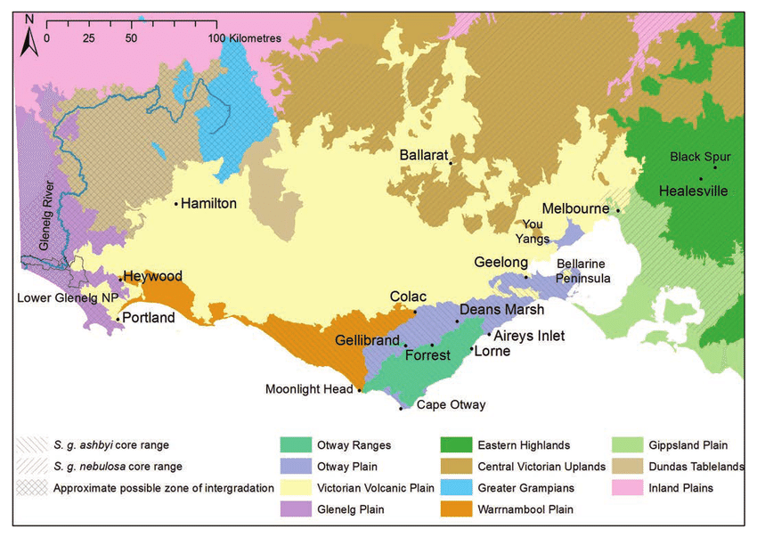

Victorian Volcanic Plain Comparison
Satellite images taken by Google


Let's Explore The Victorian Volcanic Plain
Slide to see more



Rabbits can impact native vegetation, revegetation, and pastures alike. Photo: Pest Smart CRC